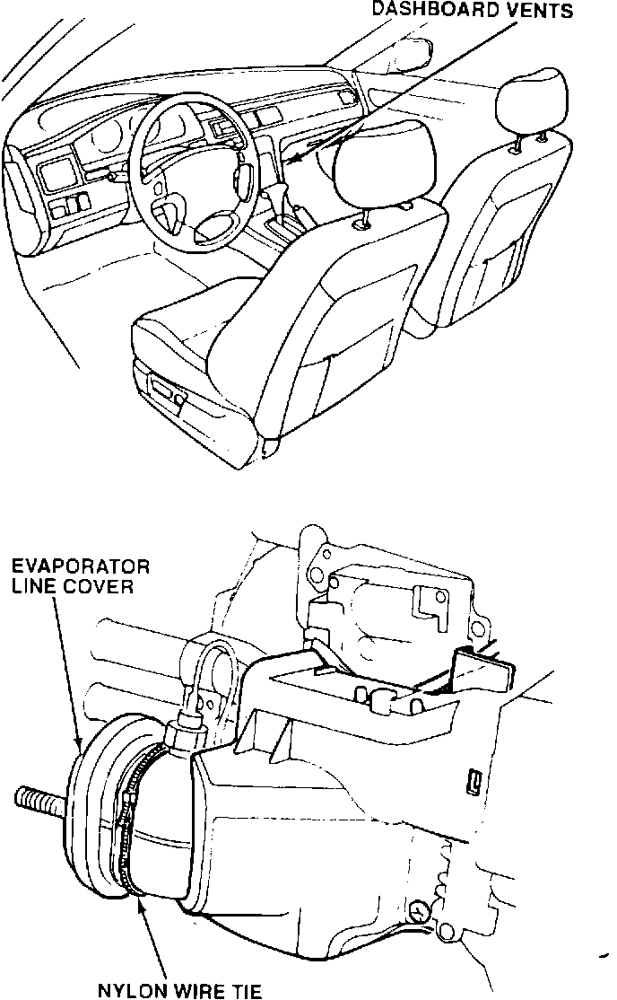

Rattles In the Dashboard Vents
Symptom:
Rattles from the dashboard vents during acceleration.
Probable Cause:
Vibration in the evaporator line cover.
Corrective Action:
Wrap the plastic cover with a nylon tie.
WARRANTY CLAIM INFORMATION
Operation number:
841030
Flat rate time:
0.1 hour
Failed P/N:
77630-SL5-A00ZA
Defect code:
043
Contention code:
B07